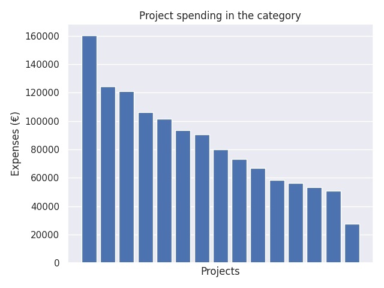

Ammatillisen koulutuksen kansainvälistyminen
Category summary
84.4K spent on average
160K highest spending

Reports in the category
Espoon seudun koulutuskuntayhtymä Omnia
Project name: HANAKO - Suomi ja Japani Network
160K spent
Helsinki Business College Oy / Suomen Liikemiesten Kauppaopisto
Project name: ChiNet 2016-2017
125K spent
Jokilaaksojen koulutuskuntayhtymä/Ylivieskan ammattiopisto
Project name: Kam'oon China 9
121K spent
Jyväskylän koulutuskuntayhtymä
Project name: Ammatillisen koulutuksen Intia-verkosto
106K spent
Helsingin Diakonissalaitoksen säätiö/Helsingin Diakoniaopisto
Project name: Minun maailmankansalaisuuspolkuni 2
102K spent
Kajaanin kaupungin koulutusliikelaitos Kainuun ammattiopisto
Project name: Kanada verkosto
93.7K spent
Kouvolan kaupunki/Kouvolan seudun ammattiopisto
Project name: Ammattioppilaitosten Venäjä-verkoston joustavat opintopolut
90.5K spent
Keski-Uudenmaan koulutuskuntayhtymä
Project name: AKKUNA17
80K spent
Raision seudun koulutuskuntayhtymä
Project name: ThaiGO 3
73.5K spent
Vantaan ammattiopisto Varia
Project name: Korea Technet2
67.1K spent
Hengitysliitto ry/Ammattiopisto Luovi
Project name: Henkilöstön kansainvälisyyspolku osaksi osaamisen kehittämistä
58.7K spent
Koulutuskeskus Salpaus - kuntayhtymä
Project name: HULA 2 - Huippulaadulla asiakaspalvelun ja palvelualojen taitajaksi
56.4K spent
Vaasan kaupunki / Vaasan ammattiopisto -Vasa yrkesinstitut
Project name: Eurooppalaiset opintopolut - facing the DIGI leap
53.3K spent
Korpisaaren säätiö / Etelä-Pohjanmaan opisto
Project name: KAOS 2- Kansainvälisyydestä osaamista työelämään
51K spent
OSEKK / OSAO / FINPEC
Project name: Potkua kotikansainvälistymiseen / OPH:n kansainvälisyysverkostohankkeiden internetsivut
27.8K spent